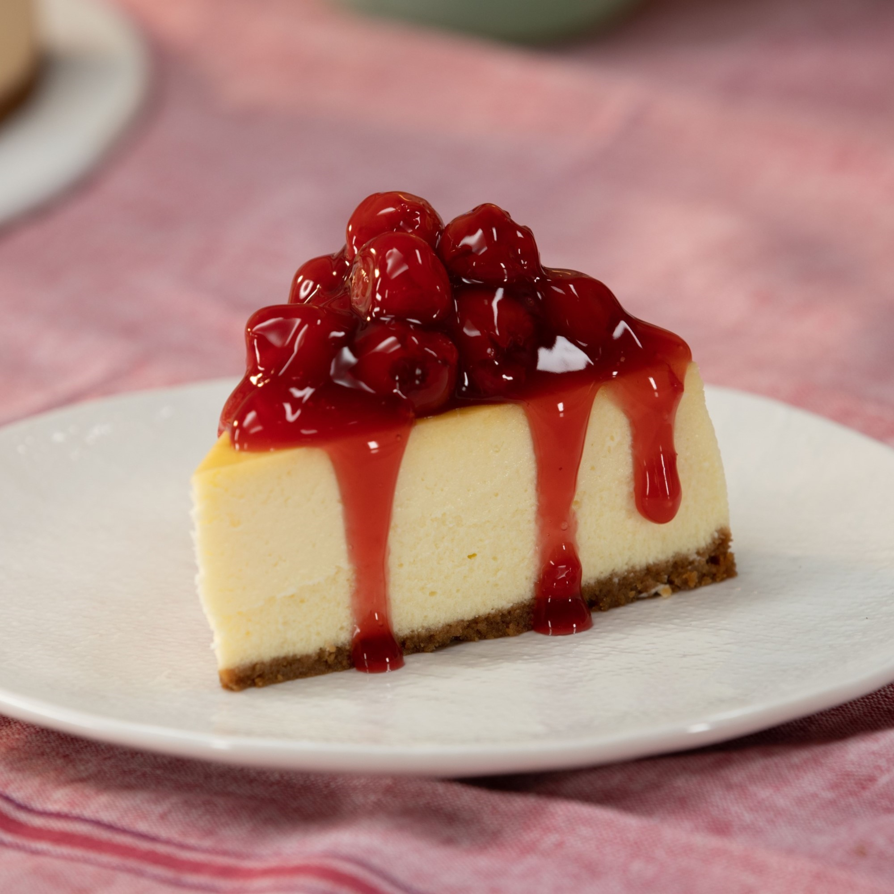

Classic Cheesecake

The Image above contains the Best Classic Cheesecake
Follow this foolproof method with expert technique tips to make a perfect
cheesecake that doesn't sink, crack, burn, or curdle. Get creative with
the toppings — serve with chocolate ganache, caramel sauce, whipped cream,
fresh fruit, or cherry pie filling!
Rich and dense, ultra-creamy, and subtly sweet, this classic cheesecake
with a graham cracker crust is a decadent treat.
Ingredients
Graham Cracker Crust:
- 1 cup graham cracker crumbs
- ¼ cup unsalted butter, melted
- 2 tablespoons white sugar
Cheesecake:
- 4 (8 ounce) packages full-fat cream cheese, at room temperature
- 1 ½ cups white sugar
- 1 cup full-fat sour cream, at room temperature
- 1 tablespoon vanilla extract
- 4 large eggs, at room temperature
For Serving:
- 1 (21 ounce) can cherry pie filling (Optional)
Steps
-
Preheat the oven to 325 degrees F (165 degrees C). Grease a 9-inch
springform pan.
-
Combine graham cracker crumbs, melted butter, and sugar for crust in a
bowl until mixture resembles wet sand. Transfer to the prepared pan. Use
the bottom of a measuring cup to press crumbs firmly into an even layer.
-
Bake crust in the preheated oven until golden brown, 8 to 10 minutes.
Remove from the oven and let sit on a wire rack until completely cool.
Leave the oven on.
-
While the crust is cooling, beat cream cheese in a stand mixer fitted
with the paddle attachment on low speed until smooth.
-
Add sugar, sour cream, and vanilla. Scrape down the bottom and sides of
the bowl and continue to beat until combined.
-
Gently whisk one egg with a fork in a small bowl; add to the cream
cheese mixture and beat just until combined. Repeat with each remaining
egg, whisking and adding just one at a time.
-
Remove the bowl from the stand mixer and firmly bang it on the counter a
few times to release any large air bubbles.
-
Place the springform pan (with the cooled crust) in an oven bag. Fold
down the excess and wrap the pan in a layer of heavy-duty aluminum foil.
Pour cheesecake mixture into the pan.
-
Place the springform pan in a large roasting pan and move it to the
lower rack of the oven.
-
Pour 2 inches of boiling water into the roasting pan. Bake cheesecake
until edges are puffed and surface is firm except for a small spot in
the center that will jiggle when the pan is gently shaken, about 1 ½
hours. Tent the cheesecake with a sheet of foil if the top is browning
too much during baking.
-
Turn off the oven; keep the oven door closed and let the cheesecake cool
slowly for 2 hours.
-
Remove from the oven. Take the springform pan out of the water bath and
set it on a cooling rack; let sit until it comes to room temperature,
about 2 more hours. Place in the refrigerator until fully set, 8 hours
to overnight.
-
Run the tip of a knife around the edges of the pan. Unhinge the lock and
remove the pan sides. Use a warm, clean knife to cut every slice. Top
slices with cherry pie filling. Keep leftovers in the refrigerator.